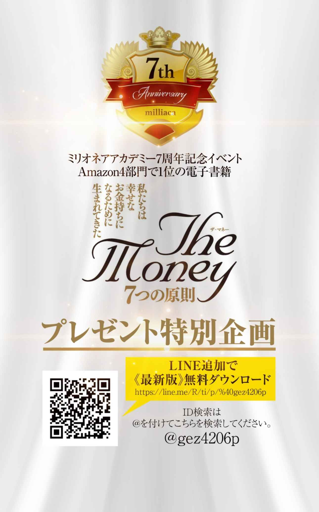
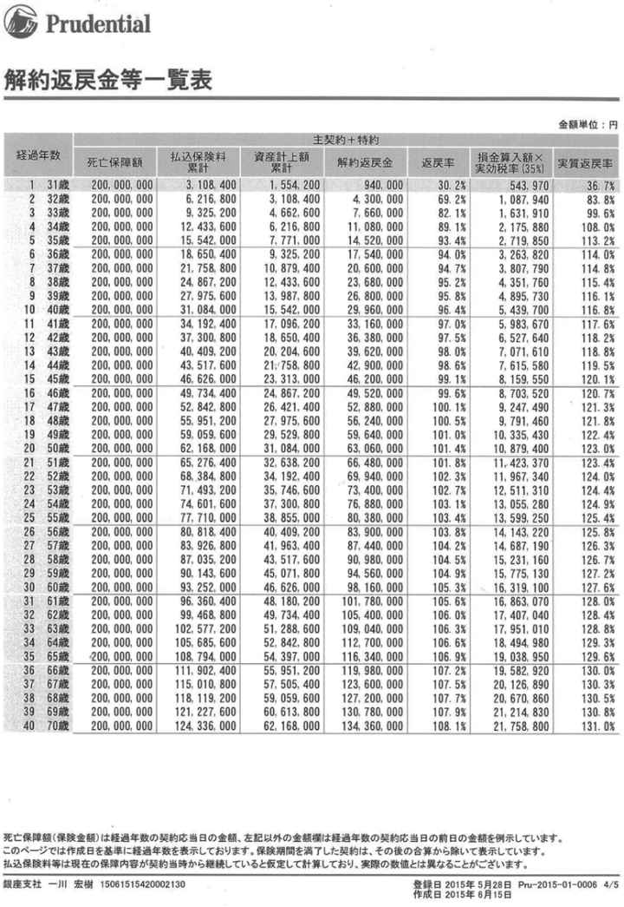
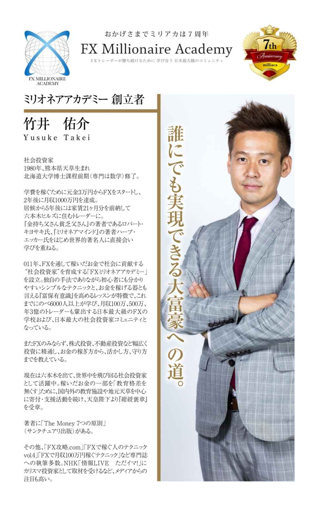

| ザ・マネー 7つの原則 第3章 お金の稼ぎ方 事業編 | |
| 竹井 佑介 | |
| NEXT LEVEL (2018) | |

第 ３ 原則 お金の稼ぎ方事業編
３―２ 会社員、公務員となり信用をつけ 投資用不動産を購入する
お金の稼ぎ方は基本的に２つあります。自分の夢のお手伝い頂く か、 他の方の夢のお手伝いをさせて頂くか。
ただ決して勘違いしてほしくないのが他の方の夢のお手伝いをするより も、 自分の夢に向かっていく方が偉いという考え方です。自分が考えられる最大の夢を大きく超 え、 そしてずっと共感できる夢 を、 自分ではなく他の方が持っているということは往々にしてあります。就職している方の多くがその企業のやっているこ と、 そして理念に共感 し、 入社されていることと思います。大事なことはより自分がやりたいと思えることに力を注いでいくことです。人生は一度っきりしかありませ ん、 だからこそ限られた時間を自分の情熱を注げるものに使うことが大切です。
この章ではお金の稼ぎ方の中でも事業につい て、 ご自身で起こされる事業の場合 と、 他の方が作られた事業をお手伝いする場合につい て、 どのようにしてお金を稼いでいくの か、 そして節税しながらどのようにして資産を構築していくのかについてお伝えしていきたいと思います。
大金持ちになろうと思ったらまず浮かぶのがこの起業の道という方が多いのではないでしょうか？実際に長者番付に載っている人の名前と業種を並べてみてみましょう。
２０１５年億万長者番付
注（名前／総資産／年齢／事業内容／国）
１ ビル・ゲイツ／７９２億ドル／５９／マイクロソフト／アメリカ
２ カルロス・スリム／７７１億ドル／７５／電気通信／メキシコ
３ ウォーレン・バフェット／７２７億ドル／８４／バークシャー・ハサウェイ／アメリカ
４ アマンシオ・オルテガ／６４５億ドル／７８／ザラ／スペイン
５ ラリー・エリソン／５４３億ドル／７０／オラクル／アメリカ
６ チャールズ・コーク／４９２億ドル／７９／多角事業／アメリカ
７ デイビッド・コーク／４２９億ドル／７４／多角事業／アメリカ
８ クリスティ・ウォルトン／４１７億ドル／６０／ウォルマート／アメリカ
９ ジム・ウォルトン／４０６億ドル／６７／ウォルマート／アメリカ
１０ リリアンヌ・ベタンクール／４０１億ドル／９２／ロレアル／フランス
１１ アリス・ウォルトン／３９４億ドル／６５／ウォルマート／アメリカ
１２ ロブソン・ウォルトン／３９１億ドル／７１／ウォルマート／アメリカ
１３ ベルナール・アルノー／３７２億ドル／６５／ＬＶＭＨ／フランス
１４ マイケル・ブルームバーグ／３５５億ドル／７３／ブルームバーグ／アメリカ
１５ ジェフ・ベゾス／３４８億ドル／５１／アマゾン／アメリカ
１６ マーク・ザッカーバーグ／３３４億ドル／３０／フェイスブック／アメリカ
１７ 李嘉誠／３３３億ドル／８６／多角事業／香港
１８ シェルドン・アデルソン／３１４億ドル／８１／カジノ／アメリカ
１９ ラリー・ペイジ／２９７億ドル／４１／グーグル／アメリカ
２０ サーゲイ・ブリン／２９２億ドル／４１／グーグル／アメリカ
...
２９ ジョージ・ソロス／２４２億ドル／８４／ヘッジファンド／アメリカ
...
４１ 柳井正／２０２億ドル／６６／小売り／日本
...
７５ 孫正義／１４１億ドル／５７／インターネット／電気通信／日本
業種をみましても圧倒的に起業家の方が多いことが分かります。そのため最初に億万長者の道を考える時にはこの起業家の道を選ぶ方は非常に多いかと思います。
基本的にお金の稼ぎ方によって人は次の４つのパターンに分かれると『金持ち父さん貧乏父さん（ Rich Dad Poor Dad ）』の著者ロバート・キヨサキ氏は言います。
Ｅ
（Employee
）
従業員
Ｓ
（Self Employe dor Small Business Owne
）
自営業者
Ｂ
（Business Owner
）
会社オーナ
ー、
事業家
Ｉ
（Investor
）
投資家
ＥＳは一馬力で時間を切り売りしてお金を稼 ぎ、 ＢＩはレバレッジを使ってお金を多馬力で稼ぎます。レバレッジと は、 テコのことで小さな力で大きな力を発揮することを言います。つまり は、 自分の時間以外のものを使って収入を生み出しているということです。自分の時間だけですとすぐに限界が来ます が、 たくさんの方々のお時間を借りることが出来れ ば、 それは大きな 力、 レバレッジとなり自分１人の時では想像も出来ない力を発揮することが出来ます。
このＢの部分がまさに事業によってお金を稼ぐという部分に当てはまります が、 ここで大事なのは事業でお金を稼ごうと思った時に目指すべき方向はＳではなくＢであるということです。
Ｓの事業の方は基本ひとでやろうとする事業のことです。Ｂはチームを創って行います。で
は、
どのようにしてそもそも事業を起こし実際に稼いでいくのでしょうか。基本的に次の４つの流れになります。
①事業計画
②個人事業主登録
③会社法人設立
④社会貢献
まず事業を計画 し、 次にいきなり会社ではなく通 常、 個人事業主登録をして個人からビジネスを始めていきます。その次に会社法人を設立 し、 最後は社会貢献に入っていきます。
①事業計画
まずはここが無いと何も始まりません。どのような事業を行うの か、 いつスタートするの か、 誰と組んで行うのかです。最も大事なことは何をやるのかを考える際にその事業はあなたのこれまでの人生と深く関わってきたものかどうかを思い返してみることです。全てあなたの人生で起きた出来事は必然であ り、 神様からのメッセージなのです。こう信じることが事業をやるうえでとても大事なことではないかと考えています。
昔から好きだったも の、 なぜか何度も目にして気にしてきたも の、 周りからやることを勧められるも の、 シンクロが起きるものは意味があるもの で、 あなたが今世でやるべきことを示唆している可能性が高いです。
そして初めて起業する方にお勧めなのは個人事業主登録です。
②個人事業主登録
まだ一緒にやる仲間が集まっていない場合には個人でスタートすることになります。何よりここが重要なのですが法人税とは別に消費税課税されるということです。平成２６年４月１日より消費税は８％に増税さ れ、 引き続き平成２７年１０月１日には１０％へ増税され負担は益々大きくなっていきます。しかしながらここで消費税を支払わなければならない課税事業者の定義が少々面白いものになっています。
個人事業者の場合
前々年（２年前）の課税売上高が１千万円超・・・・課税事業者
前々年（２年前）の課税売上高が１千万円以下・・・免税事業者
法人の場合
前々期（２年前の事業年度）の課税売上高が１千万円超・・・・課税事業者
前々期（２年前の事業年度）の課税売上高が１千万円以下・・・免税事業者
つま り、 設立当初であれば仮に初年度から１千万円以上の課税売上高が上がっても２年間は消費税が免税さ れ、 その後法人を設立すると計４年間もの 間、 消費税を節税することが出来ます。ただもちろん従業員などが入り規模が大きくなって来た時には２年間を待た ず、 すぐに法人設立しなければならないのは言うまでもありません。
ま た、 もうひとつ個人事業主のメリットがあります。それ は、 交際費に上限がないことです。つま り、 いくらでも経費にしてその分節税することが可能ということです。交際費とは「得意 先、 仕入先その 他、 会社の事業に関係のあるものに対する接 待、 供 応、 慰 安、 贈与その他これらに類する行為のために支出するもの」と規定されていますの で、 そういった場合にはどなたと行ったのかなど領収書に記載しておく必要があります。
そし て、 何と言ってもこちらは会社設立とは異なり非常に手続きが楽です。申請はお住まいの地区の税務署に必要書類を提出します。個人事業の開業届 出、 所得税の青色申告承認申請手続の２種類の書類で個人事業の開業時の提出書類は揃います。開業届出の申請書は何と１枚の紙ですので非常に手続きは楽です。今では電子申請も出来ますので非常に手続きは楽になっています。
この段階では税理士や社労士など雇う必要もないでしょうか ら、 かかる経費も限定的です。た だ、 決算はとても大変なので領収書をお渡し し、 お願いしてしまうのが良いかと思います。もちろんご自身で挑戦され数字に詳しくなることも良い訓練になります。
③会社法人設立
通常売上が１千万円を超えてきたらという言い方をされます が、 それはなぜかと言います と、 個人事業主の所得税は個人の所得税と同じですの で、 累進課税となっており稼げば稼ぐほど税率は上がります。そしてその税率が９００万円超～１，８００万円以下の部分は３０ ％、 住民税の１０％と合わせると４０％とな り、 法人税＋住民税の約３５％を超えてしまうた め、 それまでの間で法人成りする方が多いということです。
一般的に法人の方が個人事業主よりも社会的信用は高 く、 またご自身が銀行などで借入をする際にも個人事業主よりも「信用」があるため借り入れがしやすくなります。ただし通常は直近３期の決算が黒字であることが最低の条件かと思います。
以下法人のメリットとデメリットについて特に最初におさえておかなければならないことをまとめておきます。
メリット
・消費税２年間無税
資本金１千万円未満の場合は設立当初２期分は消費税の納税義務が無いため個人事業とうまく合わせれば最大４年間消費税を無税にすることが出来ます。
・信用力の拡大
先ほどお伝えした通り個人事業よりも法人の方 が、 銀行等の金融機 関、 都道府 県、 市町村からの融資も比較的容易になります。また得意 先、 仕入先及び新規の取引先開拓の面でも社会的信用は高くなります。お金とは信用であると何度も述べているよう に、 事業の血液ともいえる資金を調達しやすくなることはとても大切なことです。
・退職金の創設
個人事業主の場 合、 事業主や事業専従者 （注） も退職金の支給は必要経費として認められていません。法人の場合には役員及び従業員に対しては適正な退職金額であれば損金（経費）として認めら れ、 節税しながら積立貯金することが出来ます。
注 事業専従者とは青色申告・白色申告を行う個人事業主と生計を一にする配偶者や１５歳以上の親族 で、 年間６か月以上その事業にもっぱら従事している人のことを指します。
・欠損金の繰り越し
個人事業主の青色申告における繰越控除は３年間です が、 法人は９年間損金を繰り越すことが出来ます。そのため大きな損を出してしまった年があったとして も、 ９年後まではその損分の黒字は全て相殺され税金の対象とはなりません。
・給与所得控除が活用できる
法人の場
合、
事業主と役員への給与の支払は「役員報酬」として経費になります。そしてその役員が受け取った給与の分には給与所得控除を受けることが出来ます。例えば１，５００万円の収入に対して役員報酬を５００万円とした場
合、
まず法人は１，５００万円から５００万円が損金として計算され１千万円に対して課税されます。そして役員は給与所得控除１５４万円が受けられるた
め、
それを５００万円から差し引いた３４６万円に対して課税されることになります。つまり１，３４６万円に課税されるということです。そして個人事業主の場合は丸々１，５００万円に対して丸々課税されることになりますので納税額が大きくなるというイメージです。
ただし税金の計算は非常に複雑なため他にも考えなければならないことはたくさんあります
が、
給与所得控除がある
分、
節税出来るというイメージはしっかりと持っておいてください。
・助成 金、 補助金の活用
国や自治体が開業資金を支援するために様々な返済不要な助成金や補助金を設けています
が、
それを受けられる対象が個人事業主ではな
く、
法人であることがほとんどです。また創業支援融資系の助成金はこれから法人設立する方向けのものもあるた
め、
事業計画を立て助成金申請を
し、
通ったら実際に法人を設立というのも良いかもしれません。特にまだ若い方で開業資金が集められないという方にはオススメの考え方です。
創業・第二創業促進補
助
金
（
http://sogyo-hojo.jp/26th-hosei
/
）
な
どもその例のひとつです。
助成金
は、
要件が合えばほとんどの場合受給できますが補助金
は、
要件が合っても受給出来ない可能性があります。なぜなら補助金は採択件数や金額が予め決まっているためです。ちなみに補助金は経済産業省系の制度
で、
助成金は人事など人に関する厚生労働省系の制度となっております。
注 補助金も助成金も基本的に後払いになります。通常の融資や出資のよう に、 決定後すぐに入金されるわけではありません。例え ば、 年間上限１００万円を補助する補助金の場 合、 広告費用などに必要な経費が年間３００万円 で、 その全額を使い終わった 後、 経費の内訳を報告し確認されて後に１００万円の助成金を受け取ることができます。
デメリット
・交際費が無制限ではない
交際費の経費化について個人事業主では事業に必要なものであれば上限がありませんでした
が、
法人は資本金額に応じて上限が決まっています。
資本金１億円以下の中小企業の場合は交際費の上限が定められてお
り、
会計年度内で８００万円か飲食費の５０％を経費とすることができます。資本金が１億円を超える大企業の場合は一律飲食費の５０％を経費として認められています。（平成２７年６月現在）
・社会保険料の負担
個人事業の場合は従業員数が５人未満であれば加入する必要はありません。しかし会社の場合
は、
従業員がいようがいまいが「社会保険」の加入が義務付けられています。社会保険とは健康保険証の交付を受けることが出
来、
全額損金とな
り、
他にも様々な給付等があります。しかしながら負担額は２８．７４％ととても高いものです。
例え
ば、
社員を給与３０万円で雇った場
合、
給与支給の翌月に社会保険料として２８．７４％の８６，２２０円の納付書が届く事になります。この保険料を会社側と受け取った社員側で折半（社員１４．０４５
％、
会社１４．６９５％）することになります。そのため社会保険料が毎月給与の約１５％も負担する必要があるということを覚えておかなければなりません。
会社負担分は全額控除となるとはい
え、
負担額が大きいた
め、
これまで未払いの中小企業も多かったもののマイナンバー制が始まれば完全に把握されます
し、
自治体から支払うよう指導が厳しくなってきているた
め、
必ず入られるようにしてください。
更に追い打ちをかけるようです
が、
外形標準課税といっても赤字企業に対しても税金が課される項目も出てきましたの
で、
一時的に倒産が増えることが予想されます。以
上、
会社法人設立に関する代表的なメリッ
ト、
デメリットを述べてきましたの
で、
頭に入れておかれると良いでしょう。
また以 下、 個人事業主でも会社創立者でも活用できるメリットについて追記として２つご紹介 し、 会社のみで活用できるメリットを１つ紹介いたします。
追記１ 小規模企業共済
個人事業主でも会社法人の代表でもどちらも受けられるのが小規模企業共済になります。掛け金を月額千円から７万円の間で自由に設定することがで き、 この全額経が費となります。つまり節税しながら積み立てることが出来ます。更に凄いのはこの積み立てた共済金を一括で受け取る場合には退職所得となることです。大きな額のお金を受け取るときに最も税金が安くなるのはこの退職所得です。
通常の事業所得の場合は収益から費用を引いたものが所得となります が、 退職所得の場合は（退職金控除額）÷２＝所得となります。この「÷２」の部分がとても重要で実際受け取った額の半分しか課税されないことにな り、 最も手元に残るお金の受け取り方ということが出来ます。
更に「契約者貸付制度」もあるた め、 積み立てている金額の範囲内で共済から資金を借りることも出 来、 その利率も金額によらず２０１５年現在年率１．５％と低く設定されています。
つま り、 小規模企業共済とは節税しながら積み立てることが出 来、 かつ受け取るときは退職所得という最強ツールということです。
ただ し、 運営団体である「独立行政法人中小企業基盤整備機構」のホームページでも指摘されている通り積立期間が２０年未満の場合は元本割れするため要注意です。しかしなが ら、 節税分を考えれば２０年未満で解約する予定があったとしても入っておいた方が得ではないかと思います。
ただ し、 ひとつ注意があります。要件を満たしている時に一度加入しておけば続けることが出来ます が、 事業規模が加入要件 （注） を超えてしまう と、 加入出来なくなってしまうことです。そのためとりあえず創業したらすぐに加入を検討しておくべきではないでしょうか。
注 小規模企業共済に加入
で
きる方
（
http://www.smrj.go.jp/skyosai/051296.htm
l
）
①
建設
業、
製造
業、
運輸
業、
サービス業（宿泊業・娯楽業に限る
）、
不動産
業、
農業などを営む場合
は、
常時使用する従業員の数が２０人以下の個人事業主または会社の役員
②商業（卸売業・小売業
）、
サービス業（宿泊業・娯楽業を除く）を営む場合
は、
常時使用する従業員の数が５人以下の個人事業主または会社の役員
③事業に従事する組合員の数が２０人以下の企業組合の役員や常時使用する従業員の数が２０人以下の協業組合の役員
④常時使用する従業員の数が２０人以下であっ
て、
農業の経営を主として行っている農事組合法人の役員
⑤常時使用する従業員の数が５人以下の弁護士法
人、
税理士法人等の士業法人の社員
⑥上記
１、
２に該当する個人事業主が営む事業の経営に携わる共同経営者（個人事業主１人につき２人まで）
追記２ 経営セーフティ共済（中小企業倒産防止共済）
掛金月額 は、 ５千円から２０万円までの範囲で自由に選択で き、 総額８００万円まで掛けることが出来ます。払い込んだ掛金は税法 上、 法人の場合は損 金、 個人の場合は必要経費に算入できます。また１年以内の前納掛金も払い込んだ期の損金または必要経費に算入できます。そのため儲かった年にはその年と１年分の全納も併せて４８０万円の損金をつくり節税しながら積み立てることが出来ます。
また経営セーフティ共済の１番の利点は掛金納付月数が４０か月以上の場合は解約した際に全額戻ってくることにあります。小規模企業共済の場合は２０年（４８０か月）未満で解約してしまう場合には元本割れしてしまうため（注参照 ）、 この点においては経営セーフティネットの方に分があります。
小規模企業共済の解約に対する支給
割
合
（
http://www.smrj.go.jp/skyosai/051303.htm
l
）
経営セーフティ共済の解約に対する支
給
割合
（
http://www.smrj.go.jp/tkyosai/050952.htm
l
）
しかしながら経営セーフティネット共済の場 合、 解約手当金は税法 上、 法人の場合は益金の 額、 個人の場合は事業所得の収入金額に算入することになりますので注意が必要です。
結局見方を変えるとこちらは税金の支払いの後伸ばしということになります。しかし事業は山あ り、 谷ありです。たったの４０か月で全額解約返戻金が得られるのはまさにセーフティの言葉通り安心を得られるのではないでしょうか。ただし小規模企業共済も掛け金に対して低利でお金を借り入れ出来ます。また経営セーフティ共済のもうひとつの利点は共済金の貸付です。取引先事業者の倒産で回収困難となった売掛金債権と前渡金返還請求権の額 と、 掛金総額の１０倍に相当する額のいずれか少ない額の範囲内で請求することができます。貸付額は原 則、 ５０万円から８千万円と高額な為何かあった時にとても助けになります。
その返済期間も含めた 詳 細は、 （ http://www.smrj.go.jp/tkyosai/050950.htm l ） にあ りますのでご参考になってください。
追記３ 生命保険
最後にご紹介するのがこの生命保険です。生命保険と言われると真っ先に浮かぶのが病気や怪 我、 死亡された時に支払われる保険のことではないでしょうか？もちろん万が一の備えとして生命保険に入っておくことは大切ではあるもの の、 もちろんここで紹介するのは個人には出来ない法人のメリットのひとつとしての生命保険です。
まず個人事業主の場合には生命保険料控除は計１２万円が上限となります。生命保険 料、 介護医療保険 料、 個人年金保険料で最大で各４万円ずつ控除さ れ、 所得税から最大１２万 円、 住民税から７万円まで控除することができます が、 この通り額はとても小さいものになります。これでは節税メリットはほとんど無いといっても過言ではありません。何度もお伝えしてきたとおり最大の支出である税金を節税しなが ら、 資産を構築していくことが基本です。
それに比べて法人の生命保険の場 合、 まず控除額に上限がありません。そして掛け金の４分の１からモノによっては全額損金になるものまであります。その意味でも生命保険は個人で入るよりも法人で入られた方が多大なメリットがあることがお分かり頂けることと思います。
で は、 法人で生命保険に入るメリットはどのようなものでしょうか。基本的にはこの３つです。
（１）利率の良い定期預金
（２）退職金を節税しながら準備できる
（３）赤字決算を免れる術を持つことが出来る
ひとつずつ観ていきましょう。
（１）利率の良い定期預金
通常定期預金を銀行で行った場 合、 ゼロ金利政策下に日本があることから利率が１％を割ってしまうことがほとんどです。しかしながらインフレターゲットは２％に設定されているた め、 物価は毎年２％上が り、 これはすなわち預金の価値が毎年２％減ることを示唆しています。これでは定期預金はじめ銀行に預けているお金の価値がどんどん減っていってしまうた め、 たまったものではありません。それに対抗する手段のひとつが法人の生命保険になります。こちらは私も法人で加入している半額損金タイプの長期平準定期保険になります。
この保険は年間３１０万円ほどお支払しています が、 節税効果まで考えた実質返戻率まで考えるとたったの５年で１１３．２％にも達しています。もちろんこの保険は２億円の死亡保障があ り、 障害状態になった時は保険料の払い込み免除もあります。
こういった価値は定期預金にはありません。そのため最初は定期預金をされるよりはこのような生命保険を活用した貯蓄をお勧めいたします。もちろんこの保険を解約することなく年率２．５％で掛け金額の９０％まで借り入れを行うことも出来るた め、 何かあった時にも機動性に優れています。
定期預金を行うメリットがあるとすれ ば、 平均２・５倍の借り入れが出 来、 事業借り入れなどお願いしに行って断わられた際 に、 それなら定期預金を解約するといった交渉の手段になることではないでしょうか。
（２）退職金を節税しながら準備できる
こちらは小規模企業共済に似ています が、 保険の場合は基本半額損金になるものがほとんどです。ただし通常退職金を積み立てる場合に上がった収益から税金を引いた利益剰余金で賄いますので実効税率を３５％と考える と、 １億円の退職金を支払うため に、 １億５３８４万６１５４円の経常利益が必要だという計算になります。約１・５倍もの額になります。
これに対して２分の１の損金保険を使え ば、 保険料の２分の１が費用化できるの で、 費用化した分につい て、 割安に退職金を準備できます。
先ほどの私の保険の表をみれ ば、 ２０年目の場 合 、
払込保険料は毎年３１０８４００円×２０年＝６，２１６万８千円にな り、 この時の解約返戻金 が、 ６，３０６万円となり払込保険料を上回っています。（１０１・４％）
節税分まで考えてみる と 、
払込保険料６２１６万８千円節税額１０８７万９，４００円＝５１２８万８，６００円とな り、 ５１２８万８，６００円の拠出 で、 ６，３０６万円のキャッシュを得ることになります。よって実質返戻率 は、 １２３ ・ ０％となります。（６３０６万円÷５１２８万８，６００円＝１２３％）
同様に考えて３１年目を考えます と、 払込保険料累計が９，６３６万４００円に対し解約返戻金が１，０１７万８千円となり晴れて１億円を突破してきます。（１０５・６％）
ここで節税分を考えます と、 １６８６万３，０７０円が節税されていることか ら、 ９，６３６万４００円１６８６万３，０７０円＝７９４９万７，３３０円とな り、 ７，９４９万７，３３０円の拠出 で、 １，０１７８万円の退職金を得ることができます。（実質返戻率１２８％）
このように１億円の退職金を準備するため に、 片や１億５千万円必要なところが保険もついて８千万円弱で準備出来るとなると約７千万円も差が出てきます。
お気づきの方もいらっしゃるかと思いますがこの保険は貯蓄性が高いもので払込み保険料の割には最初のうちは死亡保障額が低くおさえられています。だからこそ半額損金に出来るよう設定されているのです。

（３ ） 赤字決算を免れる術を持つことが出来る
企業にとって赤字決算というのは時に致命的です。事業を継続できるかどうかは血液である現金（キャッシュ）がうまくまわることが大切です。その源泉ともいえるのが銀行からの融資になります。そこが赤字決算ですとパッと止まってしまう可能性が高いため非常に注意が必要です。そこで登場するのが保険です。
半額損金保険の場 合、 ２千万円の払い込み保険料に対して半額の１千万円は貸借対象表（バランスシートＢ／Ｓ）の借り方で資産として計上さ れ、 残りの１千万円は簿外といって貸借対照表には乗ら ず、 損益計算書（Ｐ／Ｌ）に保険料として経費として載ることになります。
赤字の年であれば解約返戻金と相殺することで黒字化することも可能です し、 相殺した分については解約返戻金が課税されずに済みます。
たた ゙、 事業では数十年後まで読めないということもあるでしょうか ら、 契約の早い段階から解約返戻金が高率になる逓増定期保険を活用するケースが多いです。逓増定期保険と は、 ご契約 後、 保険期間満了までに保険金額が契約当初の金額から何と５倍まで増加する定期保険を言います。満期保険金がない掛け捨ての保険ですの で、 解約返戻率が契約後早い段階で高率になるもの の、 ピークを早い段階で迎え満期になると
何と解約返戻金はゼロ円になります。その代り万が一の際には支払われる保険金額が５倍にまで増加するというわけです。法人の場合は半額損金となります。
注 この早い段階で解約返戻金のピークを迎える保険を使 い、 簿外に資産をつくり赤字になってしまいそうなときに解約し赤字になることを防げるよう財務を強化 し、 また社長の退職金の準備として多く活用されています。
つまり節税しながら簿外に資産を構築しつ つ、 いざという時に簿外からお金を現実化させることができる魅力的な側面を持っています。
これら以外にも社長死亡時の事業保 障、 相続税支払のためのキャッシュが準備できるなど様々な用途を節税しながら準備出 来、 解約するときに赤字と相殺することが出来るなど企業のセーフティネット（防御網）として活用できますので良い保険のパートナーを見つけることはとても大事なことになってきます。私の最強の保険のパートナーたちも巻末でご紹介いたします。
このように個人事業主では出来なかった様々な節税しながら資産を構築することが法人では出来るようになります。そうやって攻めだけではなく守りもしっかりと行うことによって事業は健全に運営されるというわけです。経営が健全化され利益が上がるようになってきたら次に大事なのは社会貢献です。
注 被保険者の年齢や保険期間によ り、 損金として計算される割合は変わります。
（４）社会貢献
昨今では社会企業という言葉が世の中に浸透してきました。企業のサービスとは元々社会の顕在ニー ズ、 潜在ニーズを汲み取って製品化しサービスを創造していくものです。それで人々が喜んでくれればくれるほ ど、 会社の売上も上がるため大抵の企業が社会企業と言えるかと思います。ただ大事なのは方向性です。会社がうまくいくということは社会のおかげです。
そのため自分が起業する段階か ら、 なぜ自分は稼がなければならないのか や、 その先の成功することもしっかりと考 え、 利益の剰余金をどのようにして社会に還元していくのかをあらかじめ考えておくことです。
私の場合は事業や投資で稼いだお金の一部を教育のために還元させて頂いています。昨今では３００年かけてフィリピン大統領を貧民層から輩出し汚職や格差を無くすことを目的としたセブ島にあるDAREDEMO HERO（山中博さん代表） や、 オンラインの無料塾で教育格差を無くそうと奮闘しているmanavee（花房孟胤さん代表）を応援させて頂いています。
他にも生命にダイレクトにかかわる各種医療機関やホームレスの方の支援雑誌であるBIG ISSUEにも支援させて頂いています。 と、 言いますのも私自 身、 高校一年生の時にまともに学校も行かず事件ばかり起こし迷惑をか け、 生徒会の副会長もクビにな り、 高校の寮も退寮勧告を受 け、 職員会議では２人の先生を除き退学との意見が大半でした。それでも私を信じて守ってくれた２人の先 生、 棚橋康子先 生、 山口眞人先生がいらっしゃいました。彼らのおかげで私は道を大きく踏み外し反社会勢力の方向に行かなくて済みました。
ま た、 非常に内気だった私を解放してくれたのが小学 ５、 ６年生の時の担任の吉本一成先生でした。不登校の仲間のところにも一緒に足しげく通 い、 休日には釣りに連れて行ってく れ、 自由帳を毎日１ページ書いて提出する宿題では私に小説を書く才能があると褒めてくれ文章を書くことが好きにな り、 クラスの仲間たちとも話せるようにな り、 そこから今の明るい性格に変革していったことを今でも覚えています。
そして中学 ２、 ３年の時の担任の徳永雄一郎先生にもかなり可愛がって頂 き、 元からあった明るさの才能が開花したの か、 気づけば全校生徒の前でも堂々と喋れるようになっていました。
大学時代には池畠良先生から当 時、 広島大学学校教育学部へ文系で入学していた私でしたが数学の面白さを伝えて頂 き、 夏休みなども使って自主ゼミの開催に応えて下さ り、 文系からは初の北海道大学理学部数学科の大学院へ入学することが出来ました。ま た、 中村玄先生に師事し週に３回以上もゼミを開催して頂 き、 また黒田先輩には空いている時にゼミを開いて頂 き、 文系から来てしまっていたため空いていた数学の穴を埋める勉強を指導していただいていました。
後期の途中で大学を辞めてからは星屋さんに自己啓発やスヒピリチュアルの考え 方、 そしてたくさんの人をご紹介頂き今の自分の基礎を構築することで出来ました。
このように他にも挙げればキリがないほ ど、 本当にたくさんの方々のお世話になってきました。そしてそれは一様に教育という方法によって自分自身の可能性を開花させて頂いてきました。つま り、 教育とはその人が本来持っている可能性を開花させるものであ り、 この教育の格差を埋めることで人が夢を抱 き、 夢を叶 え、 夢を応援し合 う、 だからこそ差別もなくなりユートピアとしての地球の土台が出来ていくのではと考えるようになりました。
その教育に貢献したいと思 い、 どのようなものでも稼いだお金の一部は教育関連に寄付やサポート を、 国内外で積極的に行ってきました。
そしてこれが逆に稼ぐ理由ともな り、 事業や投資など現状に満足することなく上をめざし続け本気でやっていく礎となっています。
この目的をしっかりと起業の段階から持って突き進むことが出来れ ば、 その事業もうまくいく可能性が高いのではないかと思います。私たちが偉人たちから学ばなければならないことは「なぜそんなひどい状況になったのにも関わら ず、 その事業を辞めず成功まで導くことが出来たのか」です。「なぜやるのか」も大事ですが「なぜ止めないのか」も同様に大切です。
頂いた身体を大切に し、 自分の命を使って頂き世の中に貢献していく。そういった起業家を是非一緒になって目指していければと思っています。
次は会社 員、 公務員さんの稼ぎ 方、 資産構築の話に移っていきたいと思います。
私の周りではよくロバート・キヨサキの言うＳ（自営業者 ）、 Ｂ（ビジネスオーナー ）、 Ｉ（投資家）になりたいと言っ て、 「善は急げ 」、 いきなり会社を辞めて起業しようとする方々がいます。同様に学べるところは学んだからと会社をすぐに辞めて転職しようとする人々もいます。その場合は少し待って頂ければと思います。
第１章でお伝えした通 り、 あなたのお金とは口座残高がいくら残っているかということではありません。お金は信用です。あなたが会社で働き続けたことによってあなたには目には見えない信用が貯まっているということを忘れてはなりません。
所得が年間１千万円も超えるような会社であれば３ 年、 通常の会社や公務員であれば５年間以上もし働いておられたのであれば会社を辞められる前にはこの信用を使って不動産投資用物件を購入されることをお勧めいたします。
ここで間違って欲しくないのは投資用不動産であってご自身が住むマイホームではないことに気をつけてください。そのため決して住宅ローンではありません。あくまで投資用物件であることが大切です。
この銀行からの信用には所得は当然とし て、 勤続年数の方が非常に関わってきます。そのひとつの基準が通常は５年と言われています。その上で一 度、 良い不動産会社を探して不動産を紹介してもらい金融機関に観て頂くことで自分がどの程度投資用に借入出来るのかかが分かります。
ここでいうところの良い不動産会社と は 、
①
良い物件を紹介する力がある
②金融機関を紹介出来る
ということになります。私が物件を購入する際にお世話になっている不動産会社については本の最後の方に載せておきますのでご参考にして頂ければと思います。
では購入するとしてもどういった不動産を購入したら良いのでしょうか。
不動産と考えると通常お金持ちしか出来ないのではと考えてしまいます。でも何度もお伝えしましたよね？
お金持ち＝口座残高が多い
ではないことを。どれだけのお金を動かせるかが大切なのです。この場合は銀行からの借入を示します。ということ は、 良い物件かどうかのひとつの判断基準を分かりやすく言ってしまえ ば 、
良い物件＝銀行が９０％以上融資してくれるような物件
ということになります。ものによってはフルローンや手数料分まで含めたオーバーローンまで出来るような物件も稀にあります。ただしこれは不動産が優良であることと合わせ て、 あなた自身の属 性、 時代背景もあります。
そし て、 現在はとても借入がしやすい時代背景にあります。一部の銀行ではいくら貸したかによって評価されるような状況のところもあるようで大企業の従業員様宛にお金を借りてくれるよう直接電話営業も行っています。実 際、 私のパートナーの不動産会社が力があったことも理由のひとつです が、 これまで銀行から借入をやったことがな く、 初めてお付き合いする銀行さまからいきなり７億円融資しても良いと言って頂いたこと が、 不動産の方をじっくりと進めていくきっかけとなりました。大企業の従業員様ですと海外不動産でも良いからお金を借りてもらえるよう連絡が来た方 も、 私の周りの仲間ではおりました。しかしながら借入は比較的しやすいもの の、 円安ということもあり関東では海外の投資家の方々も含めライバルが多 く、 なかなか取得が難しい状況です。たくさんの買い手がつくということはその物件の価格も上昇してしまい割高といったことにもなりかねません。
実際アベノミクスがスタートした２０１２年から２０１５年は年間平均６％近くも東京２３区を中心とした主要な場所では値上がりしていると言われています。
なぜならここ数年アベノミクスと黒田バズーカによる異次緩和による円安と東京オリンピックが決まったことで世界からもいつも以上に注目され外国からの投資資金が集ま り、 物件価格や日本株価は上昇しています。株や資産価値が上昇していることでそれらを所有している資産家はより富 み、 現金しか資産を持っていない人たちはインフレによりその資産価値は落ちていく。まさに「２１世紀の資本論」のフランスの経済学者トマ・ピケティが言うところの二極化の原因です。
話を元に戻すと東京をはじめとして立地がよく知名度が高い地域の物件価格が上昇しているとはいうもの の、 世界を見渡してみると１千万人以上の人口がいるような都市では通 常、 不動産の利回りが１～２％程度しかありません。５％以上も平気である東京では海外投資家から魅力的に映るのでしょう。もちろんそれは１千万人以上もの人口がいるような都市では不動産価格は下がら ず、 むしろ上昇しているため結果的に利回りは小さくなるからです。
それに比べると東京の物件はまだまだ魅力的なものが多いた め、 今後も外国勢から買われていく可能性は高いと言えるでしょう。だからと言って不動産バブルといった状況ではな く、 あくまで立地と物件の状態によります。都心のように比較的緩やかに上昇しているものもあれ ば、 地方やその中でも駅から離れたような物件では価格は落ちているようなところもあります。このような物件は出口に困るため非常に慎重になる必要があります。ただ土地勘があれ ば、 駅から遠いものの中に も、 実はバス停が近かった り、 その地域が車社会であれば駅から遠くてもきちんと駐車場が完備していれば良かったりもします。
この状況は日本株と似ています。これだけ株高が騒がれている 中、 ２０１５年５月２７日時点で は、 東京証券取引 所、 １部上場銘柄のう ち、 株価純資産倍率（ＰＢＲ）が１倍に満たないものが４４％（８１６銘柄）もあるような状況です。ＰＢＲが１倍割れを起こしているということは時価総額が解散価値を下回っているということですの で、 イメージとして会社を解散させてその純資産を投資家に分配させると投資家が儲かるという意味です。そのため会社が不当に低く評価されており株価が不当に安すぎると考え株を買うタイミングとも言われています （注） 。
このように投資家たちがＰＢＲ１倍割れ銘柄の中から優良銘柄を探し出すよう に、 東京で十分に値上がりしたあとは他の近郊都市や地方の大都市の中で優良物件を探す動きが外国人投資家の間でも生まれてくる可能性があります。実際その動きは京都や大阪といった街の一部地域では既に見受けら れ、 私自身も２年後に広島駅直結になる物件（グランフロント）を取得しています。こちらの物件は帰省した際には私たちが滞在 し、 家族や仲間が使いたい時には無料で貸 し、 それ以外の時には１００平米以上ある大きめの部屋のため家具をしっかりと揃 え、 海外や日本各地の観光客の方々を対象に有料で貸出す予定です。
そして東京の恵比寿駅東口徒歩１分の物件では住所も良いた め、 空室になった際には通常の賃貸の募集と月額を１割弱値上げしてＳＯＨＯ可能にして個人事業主の 方、 小さい会社のオーナー様を中心としたオフィスとして活用して頂 き、 登記して頂けるようにしています。
このように都心や地方都市の主要駅の近辺といった立地が良いと空室率をグッと抑えられることはもちろんのこ と、 ホテルとして貸し出すことも出来ます し、 ＳＯＨＯとしても活用して頂けます し、 場合によっては年間２週間泊まれる権利といったものを販売するタイムシェアも行える可能性があります。もちろん土地勘かがあることが最も大切なことですので購入される前に入念に調べる必要があります。
以上のことをまとめる と、 どのような物件が良いのかというと
①
銀行から物件価格９０％以上でフルロー
ン、
オーバーローンがくめるものである
②
立地が良い
③
減価償却が取れ節税として活用できる
ということになります。③番目についてはまだお伝えしていません が、 第５原則のところで詳しく説明していきます。
ちなみに良い物件が見つかったけれど も、 借入枠がいっぱいなど で、 どうしてもお金が銀行から貸してもらえないという方もいて諦める方もいるかもしれませんがその場合は仲間たちとお金を出し合って購入するという方法もあります。私の友人でも仲間たちからお金を借入して物件を現金で取得した方もいらっしゃいます。家賃収入で仲間への返済に充て毎月不動産投資状況のレポートを出されています。
いずれにしましても必ずすぐに諦める癖をやめて何が何でも成功するという意志をしっかりと持って行動することが何事にも基本になってきます。
た だ、 こういったこともあなたに「信用」が無ければ何も成り立ちません。常に信用の貯金を仲間たちに対しても誠実に接することで貯めていくような生き方をすることがとても大切です。
注 ＰＢＲ１割れの意味
よくＰＢＲ１倍割れ銘柄は割安銘柄だから買いと安易に言われています
が、
そんな単純なものではありません。ＰＢＲが１倍に満たないということは「事業を行えば行うほど損失が膨らむ投資する価値のない銘柄」と投資家が評価しているということです。つま
り、
持っている純資産をその会社経営者がリスクに見合う分以上の利益を追加するようにうまく活用出来ておら
ず、
結
果、
会社の収益性が低すぎると評価しているということです。
